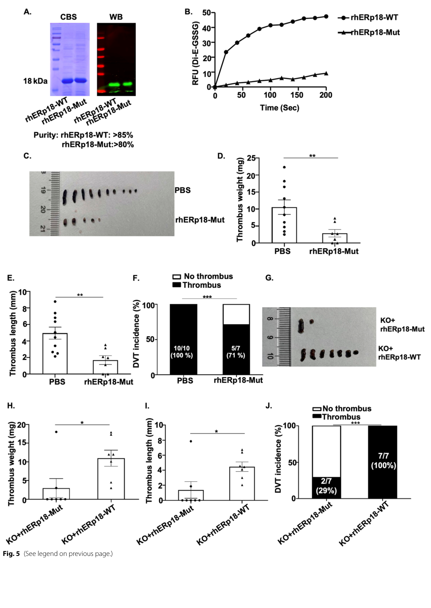

TXNDC12 (Thioredoxin domain-containing protein 12; also known as ERp18, ERp19, ERp16, and hTLP19) is a small (172 aa precursor; 146 aa mature) soluble thioredoxin- superfamily oxidoreductase resident in the endoplasmic reticulum lumen. After cleavage of an N-terminal signal peptide it is retained in the ER via a C-terminal EDEL motif. It comprises a single thioredoxin-like fold carrying an unusual CGAC redox-active active-site motif (catalytic cysteines Cys66/Cys69) with a redox potential (about -165 mV) within the range of the ER, allowing it to catalyze the formation, reduction, and isomerization of disulfide bonds in client/substrate proteins. TXNDC12 thus acts early in oxidative protein folding in the ER, promoting native disulfide bond formation, and contributes to cellular defense against prolonged ER stress, where its catalytic activity attenuates ER-stress-induced apoptosis. It is widely expressed.
| GO Term | Evidence | Action | Reason |
|---|---|---|---|
|
GO:0005783
endoplasmic reticulum
|
IBA
GO_REF:0000033 |
ACCEPT |
Summary: Phylogenetic (IBA) assignment of ER localization, consistent with the experimentally determined ER-lumen localization and the protein's EDEL retention motif.
Reason: Correct compartment; TXNDC12 is an ER-resident oxidoreductase acting in oxidative protein folding in the ER.
Supporting Evidence:
file:human/TXNDC12/TXNDC12-uniprot.txt
SUBCELLULAR LOCATION: Endoplasmic reticulum lumen
|
|
GO:0005788
endoplasmic reticulum lumen
|
IEA
GO_REF:0000120 |
ACCEPT |
Summary: Electronic assignment of ER lumen localization, redundant with and consistent with the experimental IDA annotation and the curated UniProt subcellular location.
Reason: Correct site of action; the mature soluble protein is retained in the ER lumen via its EDEL motif.
Supporting Evidence:
file:human/TXNDC12/TXNDC12-uniprot.txt
SUBCELLULAR LOCATION: Endoplasmic reticulum lumen
|
|
GO:0019153
protein-disulfide reductase (glutathione) activity
|
IEA
GO_REF:0000120 |
ACCEPT |
Summary: Electronic assignment of the glutathione-dependent protein-disulfide reductase activity (EC 1.8.4.2), redundant with the experimental IDA annotation from the ERp18 characterization.
Reason: Correct core molecular function; corresponds to the curated EC 1.8.4.2 and the CGAC active-site redox chemistry.
Supporting Evidence:
file:human/TXNDC12/TXNDC12-uniprot.txt
EC=1.8.4.2
|
|
GO:0005515
protein binding
|
IPI
PMID:25416956 A proteome-scale map of the human interactome network. |
KEEP AS NON CORE |
Summary: IntAct capture from a proteome-scale human interactome map. Bare protein binding is uninformative relative to the established oxidoreductase function.
Reason: High-throughput interactome data; per guidelines bare protein binding is not elevated to a core function.
Supporting Evidence:
file:human/TXNDC12/TXNDC12-uniprot.txt
O95881; O43765: SGTA; NbExp=3; IntAct=EBI-2564581, EBI-347996;
|
|
GO:0005515
protein binding
|
IPI
PMID:31515488 Extensive disruption of protein interactions by genetic vari... |
KEEP AS NON CORE |
Summary: IntAct capture from a variant-interactome screen. Uninformative bare protein binding.
Reason: High-throughput interactome data; not elevated to core per guidelines.
Supporting Evidence:
file:human/TXNDC12/TXNDC12-uniprot.txt
O95881; Q9UMX0: UBQLN1; NbExp=4; IntAct=EBI-2564581, EBI-741480;
|
|
GO:0005515
protein binding
|
IPI
PMID:32296183 A reference map of the human binary protein interactome. |
KEEP AS NON CORE |
Summary: IntAct capture from the HuRI binary interactome. Uninformative bare protein binding.
Reason: High-throughput interactome data; not elevated to core per guidelines.
Supporting Evidence:
file:human/TXNDC12/TXNDC12-uniprot.txt
O95881; P49069: CAMLG; NbExp=5; IntAct=EBI-2564581, EBI-1748958;
|
|
GO:0005783
endoplasmic reticulum
|
IEA
GO_REF:0000107 |
ACCEPT |
Summary: Ortholog-based electronic transfer of ER localization, consistent with the experimental ER-lumen localization.
Reason: Correct compartment; redundant with the IDA/IBA ER annotations.
Supporting Evidence:
file:human/TXNDC12/TXNDC12-uniprot.txt
SUBCELLULAR LOCATION: Endoplasmic reticulum lumen
|
|
GO:0005788
endoplasmic reticulum lumen
|
IDA
PMID:12761212 Functional characterization of ERp18, a new endoplasmic reti... |
ACCEPT |
Summary: Direct experimental demonstration that ERp18 (TXNDC12) is located in the endoplasmic reticulum, consistent with its EDEL ER-retention motif.
Reason: Experimentally supported ER-lumen localization; the curated site of action.
Supporting Evidence:
PMID:12761212
We show that ERp18 is located in the endoplasmic reticulum
|
|
GO:0019153
protein-disulfide reductase (glutathione) activity
|
IDA
PMID:12761212 Functional characterization of ERp18, a new endoplasmic reti... |
ACCEPT |
Summary: Direct biochemical demonstration that ERp18 (TXNDC12) has peptide thiol-disulfide oxidase activity dependent on both active-site cysteines (CGAC motif), the basis of EC 1.8.4.2. This is a core molecular function.
Reason: Core, experimentally supported molecular function; mutation of either active-site cysteine abolishes activity.
Supporting Evidence:
PMID:12761212
in vitro ERp18 possesses significant peptide thiol-disulfide oxidase activity, which is dependent on the presence of both active site cysteine residues.
|
|
GO:0005788
endoplasmic reticulum lumen
|
IDA
PMID:18628206 ERp16, an endoplasmic reticulum-resident thiol-disulfide oxi... |
ACCEPT |
Summary: Direct evidence that the mature protein (ERp16/TXNDC12) is localized in the lumen of the ER, consistent with its EDEL retention sequence.
Reason: Experimentally supported ER-lumen localization.
Supporting Evidence:
PMID:18628206
a COOH-terminal endoplasmic reticulum (ER) retention sequence (EDEL)
|
|
GO:0015035
protein-disulfide reductase activity
|
IDA
PMID:18628206 ERp16, an endoplasmic reticulum-resident thiol-disulfide oxi... |
ACCEPT |
Summary: Direct biochemical demonstration that ERp16/TXNDC12 is a thiol-disulfide oxidoreductase catalyzing the formation, reduction, and isomerization of disulfide bonds via its CGAC active site. This is the core molecular function.
Reason: Core, experimentally supported molecular function; the broad protein-disulfide reductase/oxidoreductase activity is the protein's defining biochemical role.
Supporting Evidence:
PMID:18628206
it catalyzed the formation, reduction, and isomerization of disulfide bonds, with the unusual CGAC active site motif being responsible for these activities
|
|
GO:1902236
negative regulation of endoplasmic reticulum stress-induced intrinsic apoptotic signaling pathway
|
IDA
PMID:18628206 ERp16, an endoplasmic reticulum-resident thiol-disulfide oxi... |
KEEP AS NON CORE |
Summary: Overexpression of ERp16/TXNDC12 inhibited ER-stress-induced apoptosis whereas a catalytically inactive mutant or knockdown potentiated it, demonstrating a catalysis- dependent protective role against prolonged ER stress. This is a downstream physiological consequence of its redox-folding activity rather than its primary biochemical function.
Reason: Well supported experimentally (PMID:18628206) but represents a downstream/physiological output of the core oxidoreductase activity; retained as non-core.
Supporting Evidence:
PMID:18628206
Expression of ERp16 in HeLa cells inhibited the induction of apoptosis by agents that elicit ER stress, including brefeldin A, tunicamycin, and dithiothreitol.
|
Q: What are the endogenous physiological substrates whose native disulfide bonds depend on TXNDC12, and does it act redundantly with other ER PDI-family oxidoreductases?
Q: How does the unusual CGAC active-site motif tune TXNDC12 between oxidase, reductase, and isomerase activities relative to canonical CXXC PDI enzymes?
Experiment: Identify TXNDC12 substrates by trapping mixed-disulfide intermediates with active-site cysteine-trapping mutants followed by mass spectrometry in human cells.
Experiment: Test whether TXNDC12 depletion sensitizes cells to ER-stress-induced apoptosis and whether re-expression of wild-type but not CGAC-mutant protein rescues, to confirm the catalysis- dependent cytoprotective role.
The research report should be a detailed narrative explaining the function, biological processes, and localization of the gene product. Citations should be given for all claims.
You should prioritize authoritative reviews and primary scientific literature when conducting research. You can supplement
this with annotations you find in gene/protein databases, but these can be outdated or inaccurate.
We are specifically interested in the primary function of the gene - for enzymes, what reaction is catalyzed, and what is the substrate specificity? For transporters, what is the substrate? For structural proteins or adapters, what is the broader structural role? For signaling molecules, what is the role in the pathway.
We are interested in where in or outside the cell the gene product carries out its function.
We are also interested in the signaling or biochemical pathways in which the gene functions. We are less interested in broad pleiotropic effects, except where these elucidate the precise role.
Include evidence where possible. We are interested in both experimental evidence as well as inference from structure, evolution, or bioinformatic analysis. Precise studies should be prioritized over high-throughput, where available.
The sources retrieved in this review consistently refer to ERp18 as TXNDC12 in human, describing it as a small ER thioredoxin/PDI-family oxidoreductase with a single CGAC active-site motif and an ER-retention signal (EDEL), aligning with the UniProt O95881 definition provided. (pierre2023investigatingtherole pages 36-41, he2024anovelrole pages 4-7)
Protein disulfide isomerase (PDI) family enzymes are defined by the presence of thioredoxin-like domains that typically contain an active-site CXXC motif, enabling thiol–disulfide exchange reactions that form, reduce, or rearrange disulfide bonds in substrate proteins. These reactions support ER proteostasis and are commonly linked to ER stress and the unfolded protein response (UPR). (powell2021proteindisulphideisomerase pages 1-2)
The 2023 ATF6α-focused work describes ERp18/TXNDC12 as an ER-resident, 172-aa, thioredoxin-fold PDI-like protein with a single CGAC catalytic motif near the N-terminus and a characteristic ER retention signal (EDEL). (pierre2023investigatingtherole pages 36-41)
A 2024 primary study produced recombinant human ERp18 in two forms—wild-type (WT) containing the CGAC motif and a catalytically inactive mutant in which CGAC→SGAS—and measured enzyme activity using a Di-E-GSSG assay. WT ERp18 displayed strong disulfide reductase activity, whereas the SGAS mutant lost this activity, supporting that ERp18 functions as a thiol–disulfide oxidoreductase and that the CGAC motif is required. (he2024anovelrole pages 4-7, he2024anovelrole pages 7-10)
The 2023 mechanistic UPR study also reports in vitro reductase activity and outlines assays used to probe ERp18 function (e.g., insulin reduction assay and redox shift assays). (pierre2023investigatingtherole pages 7-10, pierre2023investigatingtherole pages 6-7)
Reaction/substrate specificity (what is known vs. unknown):
* Direct evidence in the retrieved sources supports thiol–disulfide exchange activity, but does not provide classic enzyme kinetic constants (e.g., kcat/KM) or a comprehensive substrate repertoire.
* Mechanistic work supports ATF6α as a functionally relevant redox-regulated client pathway, with ERp18 forming mixed disulfides preferentially involving ATF6α C467 (see below). (pierre2023investigatingtherole pages 137-141)
The 2023 UPR-focused study provides multiple lines of evidence that ERp18 regulates ATF6α early in activation, via controlling ATF6α redox state and ER exit:
Together, these data support an experimentally grounded client relationship: ERp18 modulates ATF6α’s disulfide status, affecting ATF6α ER-to-Golgi trafficking and proteolytic activation during the UPR. (pierre2023investigatingtherole pages 133-137, pierre2023investigatingtherole pages 116-122)
Cell-based evidence indicates ERp18 is ER-localized and functions in ER quality control/UPR signaling via ATF6α. (pierre2023investigatingtherole pages 7-10)
A 2024 thrombosis study reports ERp18 is detected in endothelial cells, leukocytes, and platelets, is present on the surface of resting platelets (with increased surface exposure upon activation), and can be released/secreted from activated platelets or endothelial cells, supporting a context in which ERp18 can act extracellularly in vascular biology. (he2024anovelrole pages 4-7, he2024anovelrole pages 7-10)
The 2023 mechanistic work supports that ERp18 regulates the ATF6 branch of the UPR by controlling ATF6α redox status, oligomeric states, and trafficking competence. Loss of ERp18 dysregulates trafficking and proteolytic processing and yields a non-canonical cleavage product (ATF6-P), suggesting ERp18 supports correct ATF6α processing and quality control under stress. (pierre2023investigatingtherole pages 133-137, pierre2023investigatingtherole pages 122-126, pierre2023investigatingtherole pages 116-122)
A 2024 in vivo study used an inferior vena cava (IVC) stenosis model and reported that ERp18 knockout (ERp18-KO) mice developed less venous thrombosis than wild-type, with statistically significant reductions in thrombus weight/length/incidence (reported as P<0.05 to **P<0.001 depending on metric). (he2024anovelrole pages 7-10)
Mechanistically and causally:
* Recombinant rhERp18-WT (CGAC) versus catalytically inactive rhERp18 mutant (SGAS) experiments indicate that ERp18’s enzymatic activity is required for pro-thrombotic effects in this model. (he2024anovelrole pages 7-10)
* ERp18-KO mice had reduced vWF at thrombosis sites and within thrombi, while basal vWF was unchanged (ns in ELISA), supporting a model where ERp18 promotes vWF release/exocytosis rather than baseline vWF biosynthesis. (he2024anovelrole pages 7-10)
The figures from this study provide direct visual evidence for the CGAC motif, Di-E-GSSG activity assay, and in vivo thrombosis/vWF readouts. (he2024anovelrole media 70c97672, he2024anovelrole media f12e516c, he2024anovelrole media 3800f751)
The most direct 2024 advance for TXNDC12 is the demonstration that ERp18 catalytic activity contributes to venous thrombosis in an in vivo model, and that the effect correlates with local vWF levels at thrombus sites. (he2024anovelrole pages 7-10)
Publication details: He et al., 2024, Thrombosis Journal. DOI/URL: https://doi.org/10.1186/s12959-024-00678-5. (he2024anovelrole pages 7-10)
A 2023 thesis provides a mechanistic model in which ERp18 regulates ATF6α redox transitions (monomer↔467D dimer), trafficking, and cleavage during ER stress, and indicates active-site cysteine dependence for the regulatory effect. (pierre2023investigatingtherole pages 133-137, pierre2023investigatingtherole pages 116-122)
Publication details: Pierre, 2023, University of Glasgow thesis. DOI/URL: https://doi.org/10.5525/gla.thesis.83614. (pierre2023investigatingtherole pages 36-41)
Two 2024 cancer-focused papers mention TXNDC12, but the accessible excerpts provide mainly association or hypothesis-level support rather than detailed mechanistic or clinical-performance statistics:
Chen et al., 2024, Journal of Translational Medicine. DOI/URL: https://doi.org/10.1186/s12967-023-04794-0. (chen2024constructionofan pages 11-15)
Hepatocellular carcinoma oxidative-stress response: TXNDC12 is discussed as an antioxidant/redox protein upregulated in a SOCS1-expressing HCC model and is referenced (via other literature) as a factor that can inhibit lipid peroxidation/ferroptosis. The excerpt does not provide quantitative clinical statistics for TXNDC12. (shukla2024thetumorsuppressor pages 18-20)
The 2024 thrombosis study demonstrates that ERp18’s catalytic activity is necessary for its pro-thrombotic role in a mouse model and that vWF release is involved, implying ERp18 could be considered a candidate target for antithrombotic strategies (conceptually analogous to broader thiol-isomerase targeting approaches). However, the retrieved evidence stops short of clinical intervention trials in humans for ERp18/TXNDC12 specifically. (he2024anovelrole pages 7-10)
TXNDC12 appears as one component of an ER stress-related prognostic signature in osteosarcoma, representing a research-stage application of TXNDC12 expression in risk stratification. The excerpted material does not include AUC/hazard ratios for TXNDC12 alone, and clinical adoption would require independent validation. (chen2024constructionofan pages 11-15)
The combined 2023–2024 evidence supports a coherent annotation:
The following table condenses the key claims, evidence, and sources.
| Category | Key findings (1-3 bullets) | Evidence/source | Publication (author year, DOI/URL) |
|---|---|---|---|
| Identity/domain | • Human TXNDC12 corresponds to ERp18, a small PDI/thioredoxin-like ER protein. • Reported as 172 aa, with a single thioredoxin-fold catalytic domain and ER-retention signal EDEL. • Family-level reviews place TXNDC12/ERp18 among PDI-family proteins that mediate thiol-disulfide exchange in ER proteostasis. |
Pierre 2023 thesis; PDI family review (pierre2023investigatingtherole pages 36-41, powell2021proteindisulphideisomerase pages 1-2) | Pierre 2023, https://doi.org/10.5525/gla.thesis.83614; Powell & Foster 2021, https://doi.org/10.1002/cam4.3836 |
| Enzymatic activity | • Recombinant human ERp18 shows disulfide reductase activity in a Di-E-GSSG assay; catalytic mutant loses activity. • Thesis evidence also reports in vitro reductase activity and insulin reduction assay framework. • ERp18 is described as capable of catalyzing disulfide bond formation, reduction, and isomerization. |
Recombinant-protein assay and thesis biochemical analyses (he2024anovelrole pages 4-7, pierre2023investigatingtherole pages 7-10, pierre2023investigatingtherole pages 36-41) | He et al. 2024, https://doi.org/10.1186/s12959-024-00678-5; Pierre 2023, https://doi.org/10.5525/gla.thesis.83614 |
| Active-site motif | • ERp18 contains a single CGAC catalytic motif. • Mutation of CGAC to SGAS abolishes reductase activity and fails to support the pro-thrombotic function seen with WT protein. • PDI-family reviews note catalytic CXXC motifs as the basis for thiol-disulfide exchange activity. |
Catalytic-motif experiment and family review (he2024anovelrole pages 4-7, he2024anovelrole pages 7-10, powell2021proteindisulphideisomerase pages 1-2) | He et al. 2024, https://doi.org/10.1186/s12959-024-00678-5; Powell & Foster 2021, https://doi.org/10.1002/cam4.3836 |
| Localization | • ERp18 is ER-resident/ER-localized in cell-based studies. • In thrombosis work, ERp18 is detected in endothelial cells, leukocytes, and platelets; present on resting platelet surfaces and surface exposure increases with activation. • Activated platelets/endothelial cells can release or externalize ERp18, indicating extracellular activity in vascular settings. |
Cell localization and vascular-cell expression studies (pierre2023investigatingtherole pages 7-10, he2024anovelrole pages 4-7, he2024anovelrole pages 7-10) | Pierre 2023, https://doi.org/10.5525/gla.thesis.83614; He et al. 2024, https://doi.org/10.1186/s12959-024-00678-5 |
| UPR/ATF6 mechanism | • ERp18 interacts with ATF6α during ER stress and regulates ATF6α redox state and ER-to-Golgi trafficking. • ERp18 reductase activity antagonizes the monomer→467D disulfide-linked dimer shift; knockout enhances this shift and causes dysregulated/non-canonical ATF6α processing. • Substrate-trapping evidence supports mixed-disulfide formation with ATF6α, biased toward C467, consistent with ERp18 acting as a redox quality-control checkpoint in early ATF6 activation. |
ATF6-focused thesis experiments (pierre2023investigatingtherole pages 133-137, pierre2023investigatingtherole pages 116-122, pierre2023investigatingtherole pages 137-141, pierre2023investigatingtherole pages 1-6) | Pierre 2023, https://doi.org/10.5525/gla.thesis.83614 |
| Thrombosis findings | • ERp18 knockout mice develop reduced venous thrombosis in the IVC stenosis model, with lower thrombus weight, length, and incidence. • WT recombinant ERp18, but not inactive SGAS mutant, supports pro-thrombotic effects, indicating catalytic activity is required. • ERp18 deficiency lowers local plasma/thrombus vWF after stenosis while basal vWF is unchanged, suggesting regulation of vWF release/exocytosis rather than biosynthesis. |
In vivo mouse model, enzymatic rescue, and vWF analyses (he2024anovelrole pages 7-10, he2024anovelrole pages 4-7, he2024anovelrole media 70c97672) | He et al. 2024, https://doi.org/10.1186/s12959-024-00678-5 |
| Cancer/ferroptosis associations | • In osteosarcoma, TXNDC12 is one of five genes in an ER-stress prognostic signature; higher TXNDC12 expression was associated with better overall survival in that cohort. • In hepatocarcinoma-cell proteomic analysis, TXNDC12 is discussed as an antioxidant/redox protein and cited as a factor that may inhibit lipid peroxidation and ferroptosis. • These 2024 sources provide association/mechanistic hypotheses rather than definitive TXNDC12-specific clinical implementation. |
Prognostic-signature study and oxidative-stress/ferroptosis discussion (chen2024constructionofan pages 11-15, shukla2024thetumorsuppressor pages 18-20) | Chen et al. 2024, https://doi.org/10.1186/s12967-023-04794-0; Shukla et al. 2024, https://doi.org/10.3390/cancers16020292 |
Table: This table summarizes the experimentally supported identity, molecular function, localization, UPR role, and disease associations of human TXNDC12/ERp18 using only the retrieved evidence snippets. It is useful as a compact evidence map for building the full research report.
References
(pierre2023investigatingtherole pages 36-41): Arvin Shedrach Pierre. Investigating the role of erp18 during activation of upr sensor atf6α. Text, Jan 2023. URL: https://doi.org/10.5525/gla.thesis.83614, doi:10.5525/gla.thesis.83614. This article has 0 citations and is from a peer-reviewed journal.
(he2024anovelrole pages 4-7): Chao He, Aizhen Yang, Yuxin Zhang, Zhenzhen Zhao, Yi Lu, Jingyu Zhang, and Yi Wu. A novel role for protein disulfide isomerase erp18 in venous thrombosis. Thrombosis Journal, Dec 2024. URL: https://doi.org/10.1186/s12959-024-00678-5, doi:10.1186/s12959-024-00678-5. This article has 2 citations and is from a peer-reviewed journal.
(powell2021proteindisulphideisomerase pages 1-2): Lauren E. Powell and Paul A. Foster. Protein disulphide isomerase inhibition as a potential cancer therapeutic strategy. Cancer Medicine, 10:2812-2825, Mar 2021. URL: https://doi.org/10.1002/cam4.3836, doi:10.1002/cam4.3836. This article has 108 citations and is from a peer-reviewed journal.
(he2024anovelrole pages 7-10): Chao He, Aizhen Yang, Yuxin Zhang, Zhenzhen Zhao, Yi Lu, Jingyu Zhang, and Yi Wu. A novel role for protein disulfide isomerase erp18 in venous thrombosis. Thrombosis Journal, Dec 2024. URL: https://doi.org/10.1186/s12959-024-00678-5, doi:10.1186/s12959-024-00678-5. This article has 2 citations and is from a peer-reviewed journal.
(pierre2023investigatingtherole pages 7-10): Arvin Shedrach Pierre. Investigating the role of erp18 during activation of upr sensor atf6α. Text, Jan 2023. URL: https://doi.org/10.5525/gla.thesis.83614, doi:10.5525/gla.thesis.83614. This article has 0 citations and is from a peer-reviewed journal.
(pierre2023investigatingtherole pages 6-7): Arvin Shedrach Pierre. Investigating the role of erp18 during activation of upr sensor atf6α. Text, Jan 2023. URL: https://doi.org/10.5525/gla.thesis.83614, doi:10.5525/gla.thesis.83614. This article has 0 citations and is from a peer-reviewed journal.
(pierre2023investigatingtherole pages 137-141): Arvin Shedrach Pierre. Investigating the role of erp18 during activation of upr sensor atf6α. Text, Jan 2023. URL: https://doi.org/10.5525/gla.thesis.83614, doi:10.5525/gla.thesis.83614. This article has 0 citations and is from a peer-reviewed journal.
(pierre2023investigatingtherole pages 122-126): Arvin Shedrach Pierre. Investigating the role of erp18 during activation of upr sensor atf6α. Text, Jan 2023. URL: https://doi.org/10.5525/gla.thesis.83614, doi:10.5525/gla.thesis.83614. This article has 0 citations and is from a peer-reviewed journal.
(pierre2023investigatingtherole pages 116-122): Arvin Shedrach Pierre. Investigating the role of erp18 during activation of upr sensor atf6α. Text, Jan 2023. URL: https://doi.org/10.5525/gla.thesis.83614, doi:10.5525/gla.thesis.83614. This article has 0 citations and is from a peer-reviewed journal.
(pierre2023investigatingtherole pages 1-6): Arvin Shedrach Pierre. Investigating the role of erp18 during activation of upr sensor atf6α. Text, Jan 2023. URL: https://doi.org/10.5525/gla.thesis.83614, doi:10.5525/gla.thesis.83614. This article has 0 citations and is from a peer-reviewed journal.
(pierre2023investigatingtherole pages 133-137): Arvin Shedrach Pierre. Investigating the role of erp18 during activation of upr sensor atf6α. Text, Jan 2023. URL: https://doi.org/10.5525/gla.thesis.83614, doi:10.5525/gla.thesis.83614. This article has 0 citations and is from a peer-reviewed journal.
(he2024anovelrole media 70c97672): Chao He, Aizhen Yang, Yuxin Zhang, Zhenzhen Zhao, Yi Lu, Jingyu Zhang, and Yi Wu. A novel role for protein disulfide isomerase erp18 in venous thrombosis. Thrombosis Journal, Dec 2024. URL: https://doi.org/10.1186/s12959-024-00678-5, doi:10.1186/s12959-024-00678-5. This article has 2 citations and is from a peer-reviewed journal.
(he2024anovelrole media f12e516c): Chao He, Aizhen Yang, Yuxin Zhang, Zhenzhen Zhao, Yi Lu, Jingyu Zhang, and Yi Wu. A novel role for protein disulfide isomerase erp18 in venous thrombosis. Thrombosis Journal, Dec 2024. URL: https://doi.org/10.1186/s12959-024-00678-5, doi:10.1186/s12959-024-00678-5. This article has 2 citations and is from a peer-reviewed journal.
(he2024anovelrole media 3800f751): Chao He, Aizhen Yang, Yuxin Zhang, Zhenzhen Zhao, Yi Lu, Jingyu Zhang, and Yi Wu. A novel role for protein disulfide isomerase erp18 in venous thrombosis. Thrombosis Journal, Dec 2024. URL: https://doi.org/10.1186/s12959-024-00678-5, doi:10.1186/s12959-024-00678-5. This article has 2 citations and is from a peer-reviewed journal.
(chen2024constructionofan pages 11-15): Weidong Chen, Yan Liao, Pengxiao Sun, Jian Tu, Yutong Zou, Ji Fang, Ziyun Chen, Hongbo Li, Junkai Chen, Yuzhong Peng, Lili Wen, and Xianbiao Xie. Construction of an er stress-related prognostic signature for predicting prognosis and screening the effective anti-tumor drug in osteosarcoma. Journal of Translational Medicine, Jan 2024. URL: https://doi.org/10.1186/s12967-023-04794-0, doi:10.1186/s12967-023-04794-0. This article has 20 citations and is from a peer-reviewed journal.
(shukla2024thetumorsuppressor pages 18-20): Akhil Shukla, Md Gulam Musawwir Khan, Anny Armas Cayarga, Mozhdeh Namvarpour, Mohammad Mobarak H. Chowdhury, Dominique Levesque, Jean-François Lucier, François-Michel Boisvert, Sheela Ramanathan, and Subburaj Ilangumaran. The tumor suppressor socs1 diminishes tolerance to oxidative stress in hepatocellular carcinoma. Cancers, 16:292, Jan 2024. URL: https://doi.org/10.3390/cancers16020292, doi:10.3390/cancers16020292. This article has 6 citations.

Core MF = protein-disulfide reductase / thiol-disulfide oxidoreductase activity (CGAC motif, C66/C69); BP = oxidative protein folding in the ER / cell redox homeostasis, with a documented role in negative regulation of ER-stress-induced apoptosis; CC = ER lumen.
ER proteostasis | Folding enzyme | Protein disulfide isomerases ; PN-node mapping: group=mapped, scope=ok_for_propagation_to_go, GO=GO:0003756 protein disulfide isomerase activity (class/branch=no_mapping). Projection goa_status=new_to_goa.This file is generated from the current PROTEOSTASIS phase-1 dossier and local gene-review artifacts. Edit the source review, PN mapping, or dossier rather than this generated note when correcting the underlying curation.
id: O95881
gene_symbol: TXNDC12
product_type: PROTEIN
status: COMPLETE
taxon:
id: NCBITaxon:9606
label: Homo sapiens
description: >-
TXNDC12 (Thioredoxin domain-containing protein 12; also known as ERp18, ERp19,
ERp16, and hTLP19) is a small (172 aa precursor; 146 aa mature) soluble thioredoxin-
superfamily oxidoreductase resident in the endoplasmic reticulum lumen. After cleavage
of an N-terminal signal peptide it is retained in the ER via a C-terminal EDEL motif.
It comprises a single thioredoxin-like fold carrying an unusual CGAC redox-active
active-site motif (catalytic cysteines Cys66/Cys69) with a redox potential (about
-165 mV) within the range of the ER, allowing it to catalyze the formation, reduction,
and isomerization of disulfide bonds in client/substrate proteins. TXNDC12 thus acts
early in oxidative protein folding in the ER, promoting native disulfide bond formation,
and contributes to cellular defense against prolonged ER stress, where its catalytic
activity attenuates ER-stress-induced apoptosis. It is widely expressed.
existing_annotations:
- term:
id: GO:0005783
label: endoplasmic reticulum
evidence_type: IBA
original_reference_id: GO_REF:0000033
qualifier: is_active_in
review:
summary: >-
Phylogenetic (IBA) assignment of ER localization, consistent with the experimentally
determined ER-lumen localization and the protein's EDEL retention motif.
action: ACCEPT
reason: >-
Correct compartment; TXNDC12 is an ER-resident oxidoreductase acting in oxidative
protein folding in the ER.
supported_by:
- reference_id: file:human/TXNDC12/TXNDC12-uniprot.txt
supporting_text: 'SUBCELLULAR LOCATION: Endoplasmic reticulum lumen'
- term:
id: GO:0005788
label: endoplasmic reticulum lumen
evidence_type: IEA
original_reference_id: GO_REF:0000120
qualifier: located_in
review:
summary: >-
Electronic assignment of ER lumen localization, redundant with and consistent with the
experimental IDA annotation and the curated UniProt subcellular location.
action: ACCEPT
reason: >-
Correct site of action; the mature soluble protein is retained in the ER lumen via its
EDEL motif.
supported_by:
- reference_id: file:human/TXNDC12/TXNDC12-uniprot.txt
supporting_text: 'SUBCELLULAR LOCATION: Endoplasmic reticulum lumen'
- term:
id: GO:0019153
label: protein-disulfide reductase (glutathione) activity
evidence_type: IEA
original_reference_id: GO_REF:0000120
qualifier: enables
review:
summary: >-
Electronic assignment of the glutathione-dependent protein-disulfide reductase activity
(EC 1.8.4.2), redundant with the experimental IDA annotation from the ERp18 characterization.
action: ACCEPT
reason: >-
Correct core molecular function; corresponds to the curated EC 1.8.4.2 and the CGAC
active-site redox chemistry.
supported_by:
- reference_id: file:human/TXNDC12/TXNDC12-uniprot.txt
supporting_text: EC=1.8.4.2
- term:
id: GO:0005515
label: protein binding
evidence_type: IPI
original_reference_id: PMID:25416956
qualifier: enables
review:
summary: >-
IntAct capture from a proteome-scale human interactome map. Bare protein binding is
uninformative relative to the established oxidoreductase function.
action: KEEP_AS_NON_CORE
reason: >-
High-throughput interactome data; per guidelines bare protein binding is not elevated to
a core function.
supported_by:
- reference_id: file:human/TXNDC12/TXNDC12-uniprot.txt
supporting_text: 'O95881; O43765: SGTA; NbExp=3; IntAct=EBI-2564581, EBI-347996;'
- term:
id: GO:0005515
label: protein binding
evidence_type: IPI
original_reference_id: PMID:31515488
qualifier: enables
review:
summary: >-
IntAct capture from a variant-interactome screen. Uninformative bare protein binding.
action: KEEP_AS_NON_CORE
reason: >-
High-throughput interactome data; not elevated to core per guidelines.
supported_by:
- reference_id: file:human/TXNDC12/TXNDC12-uniprot.txt
supporting_text: 'O95881; Q9UMX0: UBQLN1; NbExp=4; IntAct=EBI-2564581, EBI-741480;'
- term:
id: GO:0005515
label: protein binding
evidence_type: IPI
original_reference_id: PMID:32296183
qualifier: enables
review:
summary: >-
IntAct capture from the HuRI binary interactome. Uninformative bare protein binding.
action: KEEP_AS_NON_CORE
reason: >-
High-throughput interactome data; not elevated to core per guidelines.
supported_by:
- reference_id: file:human/TXNDC12/TXNDC12-uniprot.txt
supporting_text: 'O95881; P49069: CAMLG; NbExp=5; IntAct=EBI-2564581, EBI-1748958;'
- term:
id: GO:0005783
label: endoplasmic reticulum
evidence_type: IEA
original_reference_id: GO_REF:0000107
qualifier: located_in
review:
summary: >-
Ortholog-based electronic transfer of ER localization, consistent with the experimental
ER-lumen localization.
action: ACCEPT
reason: >-
Correct compartment; redundant with the IDA/IBA ER annotations.
supported_by:
- reference_id: file:human/TXNDC12/TXNDC12-uniprot.txt
supporting_text: 'SUBCELLULAR LOCATION: Endoplasmic reticulum lumen'
- term:
id: GO:0005788
label: endoplasmic reticulum lumen
evidence_type: IDA
original_reference_id: PMID:12761212
qualifier: part_of
review:
summary: >-
Direct experimental demonstration that ERp18 (TXNDC12) is located in the endoplasmic
reticulum, consistent with its EDEL ER-retention motif.
action: ACCEPT
reason: >-
Experimentally supported ER-lumen localization; the curated site of action.
supported_by:
- reference_id: PMID:12761212
supporting_text: We show that ERp18 is located in the endoplasmic reticulum
- term:
id: GO:0019153
label: protein-disulfide reductase (glutathione) activity
evidence_type: IDA
original_reference_id: PMID:12761212
qualifier: enables
review:
summary: >-
Direct biochemical demonstration that ERp18 (TXNDC12) has peptide thiol-disulfide oxidase
activity dependent on both active-site cysteines (CGAC motif), the basis of EC 1.8.4.2.
This is a core molecular function.
action: ACCEPT
reason: >-
Core, experimentally supported molecular function; mutation of either active-site cysteine
abolishes activity.
supported_by:
- reference_id: PMID:12761212
supporting_text: >-
in vitro ERp18 possesses significant peptide thiol-disulfide oxidase activity, which is
dependent on the presence of both active site cysteine residues.
- term:
id: GO:0005788
label: endoplasmic reticulum lumen
evidence_type: IDA
original_reference_id: PMID:18628206
qualifier: located_in
review:
summary: >-
Direct evidence that the mature protein (ERp16/TXNDC12) is localized in the lumen of the
ER, consistent with its EDEL retention sequence.
action: ACCEPT
reason: >-
Experimentally supported ER-lumen localization.
supported_by:
- reference_id: PMID:18628206
supporting_text: >-
a COOH-terminal endoplasmic reticulum (ER) retention sequence (EDEL)
- term:
id: GO:0015035
label: protein-disulfide reductase activity
evidence_type: IDA
original_reference_id: PMID:18628206
qualifier: enables
review:
summary: >-
Direct biochemical demonstration that ERp16/TXNDC12 is a thiol-disulfide oxidoreductase
catalyzing the formation, reduction, and isomerization of disulfide bonds via its CGAC
active site. This is the core molecular function.
action: ACCEPT
reason: >-
Core, experimentally supported molecular function; the broad protein-disulfide
reductase/oxidoreductase activity is the protein's defining biochemical role.
supported_by:
- reference_id: PMID:18628206
supporting_text: >-
it catalyzed the formation, reduction, and isomerization of disulfide bonds, with the
unusual CGAC active site motif being responsible for these activities
- term:
id: GO:1902236
label: negative regulation of endoplasmic reticulum stress-induced intrinsic apoptotic
signaling pathway
evidence_type: IDA
original_reference_id: PMID:18628206
qualifier: acts_upstream_of_or_within
review:
summary: >-
Overexpression of ERp16/TXNDC12 inhibited ER-stress-induced apoptosis whereas a
catalytically inactive mutant or knockdown potentiated it, demonstrating a catalysis-
dependent protective role against prolonged ER stress. This is a downstream physiological
consequence of its redox-folding activity rather than its primary biochemical function.
action: KEEP_AS_NON_CORE
reason: >-
Well supported experimentally (PMID:18628206) but represents a downstream/physiological
output of the core oxidoreductase activity; retained as non-core.
supported_by:
- reference_id: PMID:18628206
supporting_text: >-
Expression of ERp16 in HeLa cells inhibited the induction of apoptosis by agents that
elicit ER stress, including brefeldin A, tunicamycin, and dithiothreitol.
core_functions:
- description: >-
ER-luminal thiol-disulfide oxidoreductase that, via its CGAC active-site motif
(Cys66/Cys69), catalyzes formation, reduction, and isomerization of disulfide bonds in
client proteins, contributing to oxidative protein folding in the endoplasmic reticulum.
molecular_function:
id: GO:0015035
label: protein-disulfide reductase activity
locations:
- id: GO:0005788
label: endoplasmic reticulum lumen
supported_by:
- reference_id: PMID:18628206
supporting_text: >-
it catalyzed the formation, reduction, and isomerization of disulfide bonds, with the
unusual CGAC active site motif being responsible for these activities
- reference_id: PMID:12761212
supporting_text: >-
in vitro ERp18 possesses significant peptide thiol-disulfide oxidase activity, which is
dependent on the presence of both active site cysteine residues.
proposed_new_terms: []
references:
- id: GO_REF:0000033
title: Annotation inferences using phylogenetic trees
findings: []
- id: GO_REF:0000107
title: Automatic transfer of experimentally verified manual GO annotation data to
orthologs using Ensembl Compara
findings: []
- id: GO_REF:0000120
title: Combined Automated Annotation using Multiple IEA Methods
findings: []
- id: PMID:12761212
title: Functional characterization of ERp18, a new endoplasmic reticulum-located
thioredoxin superfamily member.
findings:
- statement: >-
ERp18 (TXNDC12) is an ER-located, PDI-related protein with a single catalytic
thioredoxin domain bearing an unusual CGAC active-site motif and possesses peptide
thiol-disulfide oxidase activity dependent on both active-site cysteines.
reference_section_type: ABSTRACT
full_text_unavailable: true
reference_review:
relevance: HIGH
correctness: VERIFIED
review_notes: >-
Original functional characterization of ERp18/TXNDC12; basis of EC 1.8.4.2 and the
C66/C69 active-site annotations. Cached entry is abstract-only.
- id: PMID:18628206
title: 'ERp16, an endoplasmic reticulum-resident thiol-disulfide oxidoreductase:
biochemical properties and role in apoptosis induced by endoplasmic reticulum
stress.'
findings:
- statement: >-
ERp16 (the same protein as ERp18/ERp19/hTLP19/TXNDC12) is an ER-lumen thiol-disulfide
oxidoreductase (redox potential about -165 mV) that catalyzes formation, reduction, and
isomerization of disulfide bonds via its CGAC motif.
reference_section_type: ABSTRACT
- statement: >-
Catalytically active TXNDC12 protects HeLa cells against ER-stress-induced apoptosis,
whereas a catalytically dead mutant or knockdown potentiates it, indicating a
catalysis-dependent role in defense against prolonged ER stress.
reference_section_type: ABSTRACT
reference_review:
relevance: HIGH
correctness: VERIFIED
review_notes: >-
Full-text cached; confirms the same gene under the ERp16 alias and supports both the core
oxidoreductase function and the anti-apoptotic role under ER stress.
- id: PMID:25416956
title: A proteome-scale map of the human interactome network.
findings: []
reference_review:
relevance: LOW
correctness: VERIFIED
review_notes: >-
Proteome-scale interactome; source of a high-throughput protein binding capture.
- id: PMID:31515488
title: Extensive disruption of protein interactions by genetic variants across the
allele frequency spectrum in human populations.
findings: []
reference_review:
relevance: LOW
correctness: VERIFIED
review_notes: >-
Variant-interactome screen; source of a high-throughput protein binding capture.
- id: PMID:32296183
title: A reference map of the human binary protein interactome.
findings: []
reference_review:
relevance: LOW
correctness: VERIFIED
review_notes: >-
HuRI binary interactome; source of a high-throughput protein binding capture.
- id: PMID:39696500
title: A novel role for protein disulfide isomerase ERp18 in venous thrombosis.
findings:
- statement: >-
ERp18 (TXNDC12) enhances venous thrombosis: ERp18-knockout mice develop
significantly less thrombosis in an inferior vena cava stenosis model, and this
pro-thrombotic role is dependent on its enzymatic activity (the inactive
CGAC-to-SGAS mutant fails to support thrombosis). ERp18 is detected in
endothelial cells, leukocytes and platelets and its deficiency lowers vWF at the
thrombus site, implicating ERp18 in regulating vWF release.
reference_section_type: ABSTRACT
reference_review:
relevance: MEDIUM
correctness: VERIFIED
review_notes: >-
PubMed-verified (PMID:39696500, DOI:10.1186/s12959-024-00678-5). Gene-specific 2024
primary study establishing a context-dependent extracellular/vascular role for
TXNDC12/ERp18 in venous thrombosis and reconfirming that the CGAC active site is
required for activity (CGAC-to-SGAS abolishes function). The thrombosis/vWF role is a
non-core physiological output; the catalytic-dependence data corroborate the core
oxidoreductase function. Full text not cached, so no verbatim supporting_text added to
annotations.
- id: file:human/TXNDC12/TXNDC12-uniprot.txt
title: UniProt entry O95881 (TXD12_HUMAN), Thioredoxin domain-containing protein 12
findings:
- statement: >-
Protein-disulfide reductase (EC 1.8.4.2) of the ER lumen with a single thioredoxin domain,
redox-active C66/C69, EDEL ER-retention motif; promotes disulfide bond formation in client
proteins.
reference_section_type: OTHER
suggested_questions:
- question: >-
What are the endogenous physiological substrates whose native disulfide bonds depend on
TXNDC12, and does it act redundantly with other ER PDI-family oxidoreductases?
- question: >-
How does the unusual CGAC active-site motif tune TXNDC12 between oxidase, reductase, and
isomerase activities relative to canonical CXXC PDI enzymes?
suggested_experiments:
- description: >-
Identify TXNDC12 substrates by trapping mixed-disulfide intermediates with active-site
cysteine-trapping mutants followed by mass spectrometry in human cells.
- description: >-
Test whether TXNDC12 depletion sensitizes cells to ER-stress-induced apoptosis and whether
re-expression of wild-type but not CGAC-mutant protein rescues, to confirm the catalysis-
dependent cytoprotective role.
{kind=link}